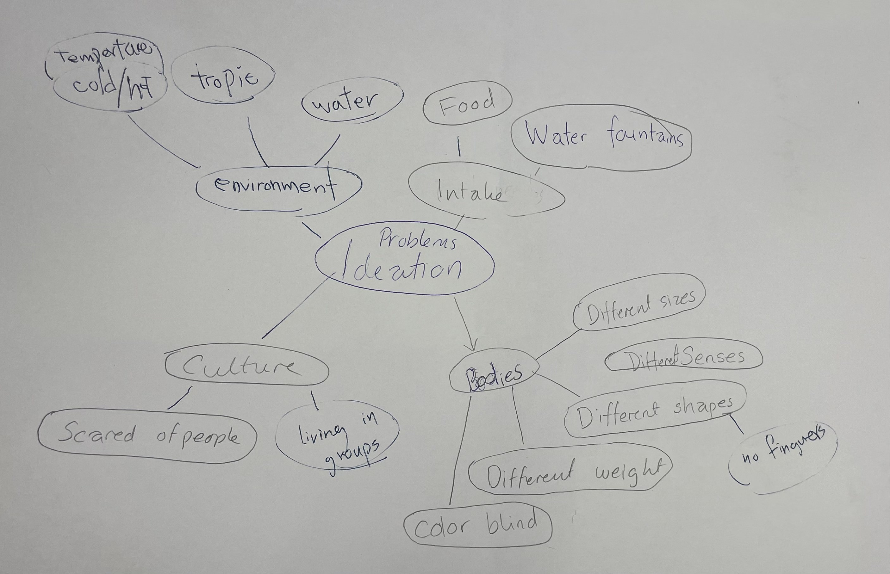

Portfolio
The project is about how we can make HKUST more welcoming for students from the animal kingdom by adapting the campus to their needs and addressing their obstacles.
In my group, we started by identifying the needs and obstacles of students from the animal kingdom by writing them down in a list. Afterwards, we brainstormed ideas on a mindmap, focusing on which existing entities at HKUST could be improved to make students from the animal kingdom feel more welcome and comfortable. The mindmap can be seen in Figure 1. We then chose the section of the mindmap labelled Environment as the most relevant one and presented our thoughts about this to the rest of the class.
Figure 1
The process was very much about brainstorming, so I came up with as many obstacles and needs as I could think of to get a good overview of them in the group. Furthermore, when creating the mindmap, I expressed all my ideas to ensure as many ideas as possible were discussed in the group, helping us find the best ideas.
I enjoyed that everyone in the group expressed all their ideas, so we had a lot of different perspectives on what the problems are. Before the brainstorming session, I already had some ideas that I thought were good, but after listening to the others, I was exposed to even better ideas that I wouldn’t have thought of myself. Discussing the different ideas was really helpful to hear everyone’s perspectives and more thoroughly evaluate whether the ideas were actually good or not. During the process, I realized that gathering everyone’s different perspectives provides the best foundation for finding the best ideas. Furthermore, having identified the needs and obstacles beforehand and thereby understanding the users, it was fairly easy to think of problems within HKUST campus. I imagine that it would have been less user-specific if we had started with the problem ideation process.